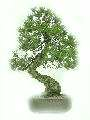

Mi a bonsai?
A bonsai szabad fordításban tálban nevelt fát jelent, de nem minden növény bonsai amely kisméretű és cserépedénybe van ültetve. A bonsai sokak szerint művészet, egy életstílus része és mi is, amikor bonsairól beszélünk nem egy génmanipulációval vagy vegyszeres eljárásokkal törpenövésűvé kényszerített fáról vagy inkább divatcikkről beszélünk (sok mindenre ráragasztják a "bonsai" címkét), hanem egy a természettel összhangban lévő (összhangra törekvő) ember alkotásáról amellyel a természet iránti csodálatát igyekszik kifejezni.
Néhányan a bonsai készítők szemére vetik, hogy szerintük kínozzák a növényeket. A metszés, drótozás valóban fájdalmat okozhat a növénynek (elsosorban a helytelen metszés,drótozás, stb.), de ha alaposan megnézünk egy szakszerűen nevelt bonsait, megértjük, hogy a metszés csak egy szükséges eljárás, (pl. a kertben lévő fákat is metszik) és összességében a növény profitál a gondoskodásból annak ellenére, hogy a cserépben soha nem érheti el a genetikailag beléprogramozott maximális méretet.
Tehát a bonsai művészet, melynek célja a korábban a természetben megfigyelt növények (elsősorban fák) miniatürizált változatokon keresztüli szimbolizálása. Nem silány utánzásra kell itt gondolni, hanem tényleg magát az élőt és az élőlények harmonikus kapcsolatait, a lényeget kell megragadni.
Történet
A bonsai története több ezer évre nyúlik vissza, eredete Kínára vezethető vissza, ahol a gyógyítók gyógynövényeiket hordták ilyen formában. Később Japánban vált a bonsai nevelése magas művészeti szintre. A bonsai jelentése: "edényben nevelt fa", és a természet és az ember közötti harmóniát szimbolizálja.
A bonsai történetének főbb pontjai:
- Kína: A Tang-dinasztia idején már ismerték a bonsaiokat, ahol a gyógyítók alkalmazták őket.
- Japán: A 12-13. században a zen szerzetesek hozták be a bonsaiokat Japánba.
- Kamakura-korszak: A minifák gondozása kedvelt időtöltéssé vált, de sokáig csak a felsőbb körökben hódoltak e művészetnek.
- Edo-kor: A bonsaiok szélesebb körben is elterjedtek.
- Bonsai művészet: A japánok magas szintre fejlesztették a bonsai nevelést, ahol a kis méretű fák a természet, a harmónia és a zen vallás szimbólumai.